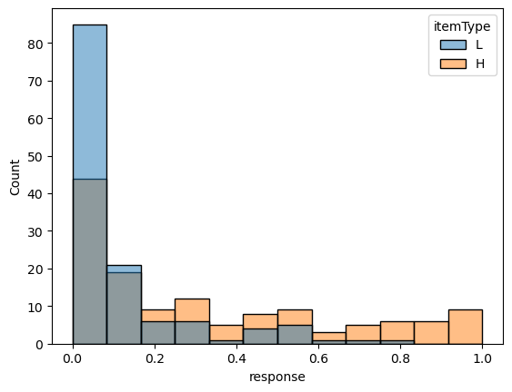
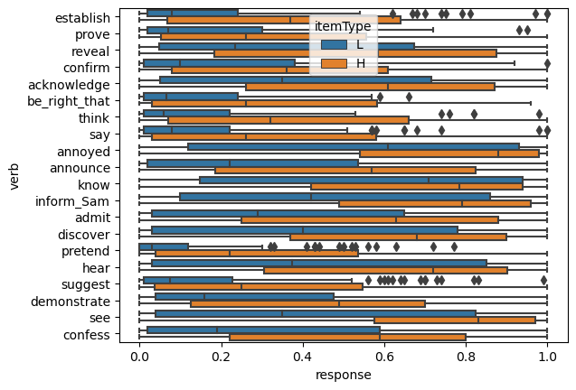

#!git clone https://github.com/judith-tonhauser/projective-probability.git data/projective-probability/
data_dir = "data/"Model definition
import os
import pandas as pd
def load_norming_data(fname: str) -> pd.DataFrame:
data = pd.read_csv(fname, index_col=0)
data = data[~data.item.isin(["F1", "F2"])]
return data.drop(columns="comments")data_norming = load_norming_data(
os.path.join(
data_dir,
"projective-probability/results/1-prior/data/cd.csv")
)
data_norming| workerid | rt | prompt | itemType | itemNr | list | item | response | fact | slide_number_in_experiment | gender | american | age | language | Answer.time_in_minutes | |
|---|---|---|---|---|---|---|---|---|---|---|---|---|---|---|---|
| 1 | 0 | 8398 | How likely is it that Frank got a cat? | H | 12 | 1 | 12H | 0.83 | Frank has always wanted a pet. | 2 | Male | 0 | 29 | english | 2.08630 |
| 2 | 0 | 3505 | How likely is it that Isabella ate a steak on ... | L | 7 | 1 | 7L | 0.14 | Isabella is a vegetarian. | 3 | Male | 0 | 29 | english | 2.08630 |
| 3 | 0 | 3526 | How likely is it that Zoe calculated the tip? | H | 10 | 1 | 10H | 0.93 | Zoe is a math major. | 4 | Male | 0 | 29 | english | 2.08630 |
| 5 | 0 | 2414 | How likely is it that Emma studied on Saturday... | L | 3 | 1 | 3L | 0.64 | Emma is in first grade. | 6 | Male | 0 | 29 | english | 2.08630 |
| 6 | 0 | 2540 | How likely is it that Jackson ran 10 miles? | L | 13 | 1 | 13L | 0.25 | Jackson is obese. | 7 | Male | 0 | 29 | english | 2.08630 |
| ... | ... | ... | ... | ... | ... | ... | ... | ... | ... | ... | ... | ... | ... | ... | ... |
| 2086 | 94 | 2881 | How likely is it that Emma studied on Saturday... | H | 3 | 2 | 3H | 0.97 | Emma is in law school. | 19 | Female | 0 | 39 | english | 1.78135 |
| 2087 | 94 | 2744 | How likely is it that Olivia sleeps until noon? | L | 4 | 2 | 4L | 0.05 | Olivia has two small children. | 20 | Female | 0 | 39 | english | 1.78135 |
| 2088 | 94 | 2403 | How likely is it that Jon walks to work? | H | 19 | 2 | 19H | 0.94 | Jon lives 2 blocks away from work. | 21 | Female | 0 | 39 | english | 1.78135 |
| 2089 | 94 | 2366 | How likely is it that Julian dances salsa? | L | 18 | 2 | 18L | 0.18 | Julian is German. | 22 | Female | 0 | 39 | english | 1.78135 |
| 2090 | 94 | 3337 | How likely is it that Jayden rented a car? | L | 14 | 2 | 14L | 0.00 | Jayden doesn"echart have a driver"echa... | 23 | Female | 0 | 39 | english | 1.78135 |
1500 rows × 15 columns
data_norming_sub = data_norming.query('item.isin(["10H", "10L"])')Code
from seaborn import histplot
p = histplot(
data=data_norming_sub, x="response", hue="fact",
hue_order=["Zoe is 5 years old.", "Zoe is a math major."]
)
_ = p.set_title("How likely is it that Zoe calculated the tip?")
Code
from seaborn import boxplot
_ = boxplot(data_norming, y="prompt", x="response", hue="itemType", hue_order=["L", "H"])
import rpy2
%load_ext rpy2.ipythondata block
data {
int<lower=0> N_resp; // number of responses
int<lower=0> N_context; // number of contexts
int<lower=0> N_subj; // number of subjects
int<lower=1,upper=N_context> context[N_resp]; // context corresponding to response n
int<lower=1,upper=N_subj> subj[N_resp]; // subject corresponding to response n
vector<lower=0,upper=1>[N_resp] resp; // bounded slider response
}parameters block
parameters {
real<lower=0> context_intercept_std; // the context random intercept standard deviation
vector[N_context] context_intercept; // the context random intercepts
real<lower=0> subj_intercept_std; // the subject random intercept standard deviation
vector[N_subj] subj_intercept; // the subject random intercepts
real<lower=0,upper=1> sigma;
}transformed parameters block
transformed parameters {
real mu[N_resp];
for (n in 1:N_resp)
mu[n] = inv_logit(context_intercept[context[n]] + subj_intercept[subj[n]]);
}model block
model {
context_intercept_std ~ exponential(1);
subj_intercept_std ~ exponential(1);
// sample the context intercepts
context_intercept ~ normal(0, context_intercept_std);
// sample the subject intercepts
subj_intercept ~ normal(0, subj_intercept_std);
// sample the responses
for (n in 1:N_resp)
resp[n] ~ normal(mu[n], sigma) T[0,1];
}generated quantities block
generated quantities {
vector[N_context] context_prob;
for (c in 1:N_context) {
context_prob[c] = inv_logit(
context_intercept[c]
);
}
vector[N_resp] resp_pp_rep;
for (n in 1:N_resp){
resp_pp_rep[n] = normal_lub_rng(mu[n], sigma, 0, 1);
}
}Projection Data
def load_projection_data(fname: str) -> pd.DataFrame:
data = pd.read_csv(fname, index_col=0).drop(columns="comments")
data = data[data.trigger_class != "control"]
data["itemType"] = data.fact_type.str.replace("fact", "")
data["item"] = data.contentNr.astype(str) + data.fact_type.str.replace("fact", "")
return datadata_projection = load_projection_data(
os.path.join(
data_dir,
"projective-probability/results/3-projectivity/data/cd.csv"
)
)
data_projection| workerid | rt | subjectGender | speakerGender | content | verb | fact | fact_type | contentNr | trigger_class | ... | slide_number_in_experiment | age | language | assess | american | gender | Answer.time_in_minutes | assignmentid | itemType | item | |
|---|---|---|---|---|---|---|---|---|---|---|---|---|---|---|---|---|---|---|---|---|---|
| 3 | 0 | 3495 | M | M | Emily bought a car yesterday | establish | Emily has been saving for a year | factH | 8 | NonProj | ... | 4 | 38 | english | Yes | m | m | 2.0626 | 3PIWWX1FJJ78V5N7WBELSYK9QJBJJ3 | H | 8H |
| 4 | 0 | 3866 | F | M | Frank got a cat | prove | Frank has always wanted a pet | factH | 12 | C | ... | 5 | 38 | english | Yes | m | m | 2.0626 | 3PIWWX1FJJ78V5N7WBELSYK9QJBJJ3 | H | 12H |
| 5 | 0 | 2983 | F | F | Charley speaks Spanish | reveal | Charley lives in Mexico | factH | 20 | NonProj | ... | 6 | 38 | english | Yes | m | m | 2.0626 | 3PIWWX1FJJ78V5N7WBELSYK9QJBJJ3 | H | 20H |
| 6 | 0 | 4669 | F | F | Jon walks to work | confirm | Jon lives 10 miles away from work | factL | 19 | C | ... | 7 | 38 | english | Yes | m | m | 2.0626 | 3PIWWX1FJJ78V5N7WBELSYK9QJBJJ3 | L | 19L |
| 7 | 0 | 3847 | M | F | Mia drank 2 cocktails last night | acknowledge | Mia is a college student | factH | 6 | C | ... | 8 | 38 | english | Yes | m | m | 2.0626 | 3PIWWX1FJJ78V5N7WBELSYK9QJBJJ3 | H | 6H |
| ... | ... | ... | ... | ... | ... | ... | ... | ... | ... | ... | ... | ... | ... | ... | ... | ... | ... | ... | ... | ... | ... |
| 7792 | 299 | 11176 | F | F | Jackson ran 10 miles | see | Jackson is obese | factL | 13 | NonProj | ... | 19 | 44 | English | Yes | m | m | 8.1216 | 3GA6AFUKOOP1JLQS5QJD0EN5HUOH3N | L | 13L |
| 7795 | 299 | 12196 | F | F | Josh learned to ride a bike yesterday | reveal | Josh is a 75-year old man | factL | 16 | NonProj | ... | 22 | 44 | English | Yes | m | m | 8.1216 | 3GA6AFUKOOP1JLQS5QJD0EN5HUOH3N | L | 16L |
| 7797 | 299 | 5205 | M | F | Isabella ate a steak on Sunday | confirm | Isabella is from Argentina | factH | 7 | C | ... | 24 | 44 | English | Yes | m | m | 8.1216 | 3GA6AFUKOOP1JLQS5QJD0EN5HUOH3N | H | 7H |
| 7799 | 299 | 10590 | M | M | Grace visited her sister | annoyed | Grace loves her sister | factH | 9 | NonProj | ... | 26 | 44 | English | Yes | m | m | 8.1216 | 3GA6AFUKOOP1JLQS5QJD0EN5HUOH3N | H | 9H |
| 7800 | 299 | 11976 | F | M | Frank got a cat | admit | Frank has always wanted a pet | factH | 12 | C | ... | 27 | 44 | English | Yes | m | m | 8.1216 | 3GA6AFUKOOP1JLQS5QJD0EN5HUOH3N | H | 12H |
5320 rows × 21 columns
data_projection_pretend = data_projection.query("verb == 'pretend'")
data_projection_pretend[["verb", "itemType", "content", "fact", "response"]].head()| verb | itemType | content | fact | response | |
|---|---|---|---|---|---|
| 21 | pretend | L | Owen shoveled snow last winter | Owen lives in New Orleans | 0.22 |
| 35 | pretend | L | Jackson ran 10 miles | Jackson is obese | 0.05 |
| 60 | pretend | H | Danny ate the last cupcake | Danny loves cake | 0.03 |
| 98 | pretend | H | Josh learned to ride a bike yesterday | Josh is a 5-year old boy | 0.55 |
| 118 | pretend | H | Tony had a drink last night | Tony really likes to party with his friends | 0.43 |
Code
p = histplot(
data=data_projection_pretend, x="response", hue="itemType",
hue_order=["L", "H"]
)
data_projection_know = data_projection.query("verb == 'know'")
data_projection_know[["verb", "itemType", "content", "fact", "response"]].head()| verb | itemType | content | fact | response | |
|---|---|---|---|---|---|
| 15 | know | L | Danny ate the last cupcake | Danny is a diabetic | 0.97 |
| 27 | know | H | Owen shoveled snow last winter | Owen lives in Chicago | 0.12 |
| 55 | know | H | Sophia got a tattoo | Sophia is a hipster | 0.04 |
| 83 | know | H | Jackson ran 10 miles | Jackson is training for a marathon | 0.74 |
| 121 | know | L | Frank got a cat | Frank is allergic to cats | 0.61 |
Code
p = histplot(
data=data_projection_know, x="response", hue="itemType",
hue_order=["L", "H"]
)
Code
_ = boxplot(data_projection, y="verb", x="response", hue="itemType", hue_order=["L", "H"])
\[\begin{align*} \rho^\text{(verb)}_v &\sim \mathcal{N}(0, \sigma_\text{verb})\\ \rho^\text{(context)}_c &\sim \mathcal{N}\left(\mu^\text{(context)}_c, \sigma^\text{(context)}_c\right)\\ \rho^\text{(subj-verb)}_s &\sim \mathcal{N}(0, \sigma_\text{subj-verb})\\ \rho^\text{(subj-context)}_s &\sim \mathcal{N}(0, \sigma_\text{subj-context})\\ \end{align*}\]
where each of the standard deviations are distributed exponential.
\[\begin{align*} \sigma_\text{verb} &\sim \text{Exponential}(1)\\ \sigma_\text{subj-verb} &\sim \text{Exponential}(1)\\ \sigma_\text{subj-context} &\sim \text{Exponential}(1)\\ \end{align*}\]
data block
data {
int<lower=0> N_resp; // number of responses
int<lower=0> N_verb; // number of verbs
int<lower=0> N_context; // number of contexts
int<lower=0> N_subj; // number of subjects
vector[N_verb] verb_mean; // the verb means inferred from a previous model fit
vector[N_verb] verb_std; // the verb standard deviations inferred from a previous model fit
vector[N_context] context_mean; // the context means inferred from the norming data
vector[N_context] context_std; // the context standard deviations inferred from the norming data
int<lower=1,upper=N_verb> verb[N_resp]; // verb corresponding to response n
int<lower=1,upper=N_context> context[N_resp]; // context corresponding to response n
int<lower=1,upper=N_subj> subj[N_resp]; // subject corresponding to response n
vector<lower=0,upper=1>[N_resp] resp; // bounded slider response
}parameters_and_model_block_files = {
"no_priors_fixed": "parameters-and-model-block.stan",
"verb_priors_fixed": "parameters-and-model-block-verb-prior-fixed.stan",
"context_priors_fixed": "parameters-and-model-block-context-prior-fixed.stan",
"both_priors_fixed": "parameters-and-model-block-context-and-verb-priors-fixed.stan",
}No fixed priors
parameters block
parameters {
real<lower=0> verb_intercept_std; // the verb random intercept standard deviation
vector[N_verb] verb_intercept_z; // the verb random intercepts z-score
real<lower=0> context_intercept_std; // the context random intercept standard deviation
vector[N_context] context_intercept_z; // the context random intercepts z-score
real<lower=0> subj_intercept_verb_std; // the subject random verb intercept standard deviation
vector[N_subj] subj_intercept_verb_z; // the subject random verb intercepts z-score
real<lower=0> subj_intercept_context_std; // the subject random context intercept standard deviation
vector[N_subj] subj_intercept_context_z; // the subject random context intercepts z-score
real<lower=0,upper=1> sigma; // the standard deviation of the likelihood
}transformed parameters block
transformed parameters {
// verb parameters
vector[N_verb] verb_intercept = verb_intercept_std * verb_intercept_z;
// context parameters
vector[N_context] context_intercept = context_intercept_std * context_intercept_z;
// subject parameters
vector[N_subj] subj_intercept_verb = subj_intercept_verb_std * subj_intercept_verb_z;
vector[N_subj] subj_intercept_context = subj_intercept_context_std * subj_intercept_context_z;
// log-likelihood
vector[N_resp] log_lik;
vector[N_resp] verb_prob_by_resp;
vector[N_resp] context_prob_by_resp;
for (n in 1:N_resp) {
verb_prob_by_resp[n] = inv_logit(
verb_intercept[verb[n]] + subj_intercept_verb[subj[n]]
);
context_prob_by_resp[n] = inv_logit(
context_intercept[context[n]] + subj_intercept_context[subj[n]]
);
log_lik[n] = log_lik_lpdf(
resp[n] | verb_prob_by_resp[n], context_prob_by_resp[n], sigma
);
}
}model block
model {
// sample the verb intercepts
verb_intercept_std ~ exponential(1);
verb_intercept_z ~ std_normal();
// sample the context intercepts
context_intercept_std ~ exponential(1);
context_intercept_z ~ std_normal();
// sample the subject intercepts
subj_intercept_verb_std ~ exponential(1);
subj_intercept_verb_z ~ std_normal();
subj_intercept_context_std ~ exponential(1);
subj_intercept_context_z ~ std_normal();
// sample the responses
for (n in 1:N_resp)
target += log_lik[n];
}Fixed context priors
parameters block
parameters {
real<lower=0> verb_intercept_std; // the verb random intercept standard deviation
vector[N_verb] verb_intercept_z; // the verb random intercepts z-score
vector[N_context] context_intercept_z; // the context random intercepts z-score
real<lower=0> subj_intercept_verb_std; // the subject random verb intercept standard deviation
vector[N_subj] subj_intercept_verb_z; // the subject random verb intercepts z-score
real<lower=0> subj_intercept_context_std; // the subject random context intercept standard deviation
vector[N_subj] subj_intercept_context_z; // the subject random context intercepts z-score
real<lower=0,upper=1> sigma; // the standard deviation of the likelihood
}transformed parameters block
transformed parameters {
// verb parameters
vector[N_verb] verb_intercept = verb_intercept_std * verb_intercept_z;
// context parameters
vector[N_context] context_intercept = context_std .* context_intercept_z + context_mean;
// subject parameters
vector[N_subj] subj_intercept_verb = subj_intercept_verb_std * subj_intercept_verb_z;
vector[N_subj] subj_intercept_context = subj_intercept_context_std * subj_intercept_context_z;
// log-likelihood
vector[N_resp] log_lik;
vector[N_resp] verb_prob_by_resp;
vector[N_resp] context_prob_by_resp;
for (n in 1:N_resp) {
verb_prob_by_resp[n] = inv_logit(
verb_intercept[verb[n]] + subj_intercept_verb[subj[n]]
);
context_prob_by_resp[n] = inv_logit(
context_intercept[context[n]] + subj_intercept_context[subj[n]]
);
log_lik[n] = log_lik_lpdf(
resp[n] | verb_prob_by_resp[n], context_prob_by_resp[n], sigma
);
}
}model block
model {
// sample the verb intercepts
verb_intercept_std ~ exponential(1);
verb_intercept_z ~ std_normal();
// sample the context intercepts
context_intercept_z ~ std_normal();
// sample the subject intercepts
subj_intercept_verb_std ~ exponential(1);
subj_intercept_verb_z ~ std_normal();
subj_intercept_context_std ~ exponential(1);
subj_intercept_context_z ~ std_normal();
// sample the responses
for (n in 1:N_resp)
target += log_lik[n];
}Fixed verb priors
parameters block
parameters {
vector[N_verb] verb_intercept_z; // the verb random intercepts z-score
real<lower=0> context_intercept_std; // the context random intercept standard deviation
vector[N_context] context_intercept_z; // the context random intercepts z-score
real<lower=0> subj_intercept_verb_std; // the subject random verb intercept standard deviation
vector[N_subj] subj_intercept_verb_z; // the subject random verb intercepts z-score
real<lower=0> subj_intercept_context_std; // the subject random context intercept standard deviation
vector[N_subj] subj_intercept_context_z; // the subject random context intercepts z-score
real<lower=0,upper=1> sigma; // the standard deviation of the likelihood
}transformed parameters block
transformed parameters {
// verb parameters
vector[N_verb] verb_intercept = verb_std .* verb_intercept_z + verb_mean;
// context parameters
vector[N_context] context_intercept = context_intercept_std * context_intercept_z;
// subject parameters
vector[N_subj] subj_intercept_verb = subj_intercept_verb_std * subj_intercept_verb_z;
vector[N_subj] subj_intercept_context = subj_intercept_context_std * subj_intercept_context_z;
// log-likelihood
vector[N_resp] log_lik;
vector[N_resp] verb_prob_by_resp;
vector[N_resp] context_prob_by_resp;
for (n in 1:N_resp) {
verb_prob_by_resp[n] = inv_logit(
verb_intercept[verb[n]] + subj_intercept_verb[subj[n]]
);
context_prob_by_resp[n] = inv_logit(
context_intercept[context[n]] + subj_intercept_context[subj[n]]
);
log_lik[n] = log_lik_lpdf(
resp[n] | verb_prob_by_resp[n], context_prob_by_resp[n], sigma
);
}
}model block
model {
// sample the verb intercepts
verb_intercept_z ~ std_normal();
// sample the context intercepts
context_intercept_std ~ exponential(1);
context_intercept_z ~ std_normal();
// sample the subject intercepts
subj_intercept_verb_std ~ exponential(1);
subj_intercept_verb_z ~ std_normal();
subj_intercept_context_std ~ exponential(1);
subj_intercept_context_z ~ std_normal();
// sample the responses
for (n in 1:N_resp)
target += log_lik[n];
}generated quantities block
generated quantities {
vector[N_verb] verb_prob = inv_logit(
verb_intercept
);
vector[N_context] context_prob = inv_logit(
context_intercept
);
}Bleached
data_projection_bleached = load_projection_data(
os.path.join(
data_dir,
"projective-probability-replication/bleached.csv"
)
)
data_projection_bleached["workerid"] = data_projection_bleached.participant
data_projection_bleached| slide_number_in_experiment | verb | contentNr | content | speakerGender | fact | fact_type | utterance | question | subjectGender | speakerName | subjectName | trigger_class | response | rt | participant | item | workerid | |
|---|---|---|---|---|---|---|---|---|---|---|---|---|---|---|---|---|---|---|
| 0 | 2 | inform_Sam | 11 | that thing happened | F | Danny is a diabetic | factL | Did Amanda inform Sam that a particular thing ... | 11 | F | Donna | Shirley | C | 0.00 | 15699 | 1 | 11L | 1 |
| 3 | 5 | confirm | 13 | that thing happened | F | Jackson is training for a marathon | factH | Did Laura confirm that a particular thing happ... | 13 | F | Nancy | Janet | C | 0.00 | 6903 | 1 | 13H | 1 |
| 4 | 6 | be_right_that | 20 | that thing happened | F | Charley lives in Mexico | factH | Is Anna right that a particular thing happened? | 20 | F | Carol | Nicole | C | 0.00 | 4640 | 1 | 20H | 1 |
| 5 | 7 | prove | 3 | that thing happened | F | Emma is in law school | factH | Did Justin prove that a particular thing happe... | 3 | M | Lisa | Brandon | C | 0.00 | 5977 | 1 | 3H | 1 |
| 6 | 8 | admit | 2 | that thing happened | F | Josie doesn't have a passport | factL | Did Scott admit that a particular thing happened? | 2 | M | Jennifer | Nicholas | C | 0.49 | 7887 | 1 | 2L | 1 |
| ... | ... | ... | ... | ... | ... | ... | ... | ... | ... | ... | ... | ... | ... | ... | ... | ... | ... | ... |
| 21 | 23 | discover | 1 | that thing happened | F | Mary is taking a prenatal yoga class | factH | Did Patrick discover that a particular thing h... | 1 | M | Carol | Gregory | NonProj | 0.82 | 2665 | 50 | 1H | 50 |
| 22 | 24 | suggest | 19 | that thing happened | M | Jon lives 2 blocks away from work | factH | Did Ruth suggest that a particular thing happe... | 19 | F | Robert | Anna | C | 0.73 | 2619 | 50 | 19H | 50 |
| 23 | 25 | confirm | 9 | that thing happened | M | Grace loves her sister | factH | Did Andrew confirm that a particular thing hap... | 9 | M | James | Tyler | C | 0.68 | 1120 | 50 | 9H | 50 |
| 24 | 26 | hear | 11 | that thing happened | F | Danny is a diabetic | factL | Did Amanda hear that a particular thing happened? | 11 | F | Jennifer | Diane | C | 0.70 | 1824 | 50 | 11L | 50 |
| 25 | 27 | think | 10 | that thing happened | M | Zoe is 5 years old | factL | Does Tim think that a particular thing happened? | 10 | M | Richard | Jacob | NonProj | 0.79 | 1424 | 50 | 10L | 50 |
1000 rows × 18 columns
Templatic
data_projection_templatic = load_projection_data(
os.path.join(
data_dir,
"projective-probability-replication/templatic.csv"
)
)
data_projection_templatic["workerid"] = data_projection_templatic.participant
data_projection_templatic| slide_number_in_experiment | verb | contentNr | content | speakerGender | fact | fact_type | utterance | question | subjectGender | speakerName | subjectName | trigger_class | response | rt | participant | item | workerid | |
|---|---|---|---|---|---|---|---|---|---|---|---|---|---|---|---|---|---|---|
| 0 | 2 | prove | 11 | X happened | M | Danny loves cake | factH | Did Amanda prove that X happened? | 11 | F | William | Nicole | C | 0.58 | 2892 | 1 | 11H | 1 |
| 1 | 3 | annoyed | 7 | X happened | F | Isabella is a vegetarian | factL | Is Kevin annoyed that X happened? | 7 | M | Margaret | Jeffrey | NonProj | 0.47 | 1876 | 1 | 7L | 1 |
| 2 | 4 | discover | 14 | X happened | F | Jayden's car is in the shop | factH | Did Stephanie discover that X happened? | 14 | F | Karen | Amanda | NonProj | 0.67 | 1854 | 1 | 14H | 1 |
| 3 | 5 | acknowledge | 3 | X happened | M | Emma is in law school | factH | Did Justin acknowledge that X happened? | 3 | M | Mark | Gary | C | 0.72 | 2423 | 1 | 3H | 1 |
| 4 | 6 | pretend | 9 | X happened | M | Grace loves her sister | factH | Did Andrew pretend that X happened? | 9 | M | Christopher | Justin | NonProj | 0.67 | 9479 | 1 | 9H | 1 |
| ... | ... | ... | ... | ... | ... | ... | ... | ... | ... | ... | ... | ... | ... | ... | ... | ... | ... | ... |
| 20 | 22 | reveal | 20 | X happened | F | Charley lives in Korea | factL | Did Anna reveal that X happened? | 20 | F | Kimberly | Rebecca | NonProj | 0.82 | 1877 | 50 | 20L | 50 |
| 22 | 24 | discover | 12 | X happened | M | Frank has always wanted a pet | factH | Did Melissa discover that X happened? | 12 | F | Robert | Rachel | NonProj | 0.84 | 1783 | 50 | 12H | 50 |
| 23 | 25 | admit | 16 | X happened | M | Josh is a 5-year old boy | factH | Did Sharon admit that X happened? | 16 | F | William | Anna | C | 0.56 | 2008 | 50 | 16H | 50 |
| 24 | 26 | confirm | 4 | X happened | M | Olivia has two small children | factL | Did Jerry confirm that X happened? | 4 | M | George | Nicholas | C | 0.78 | 2149 | 50 | 4L | 50 |
| 25 | 27 | acknowledge | 15 | X happened | M | Tony really likes to party with his friends | factH | Did Rebecca acknowledge that X happened? | 15 | F | Christopher | Julie | C | 0.46 | 2500 | 50 | 15H | 50 |
1000 rows × 18 columns